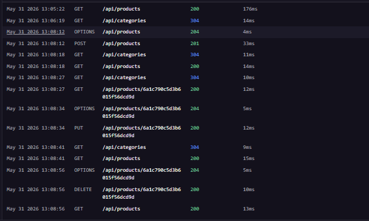
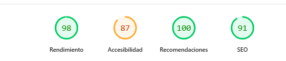
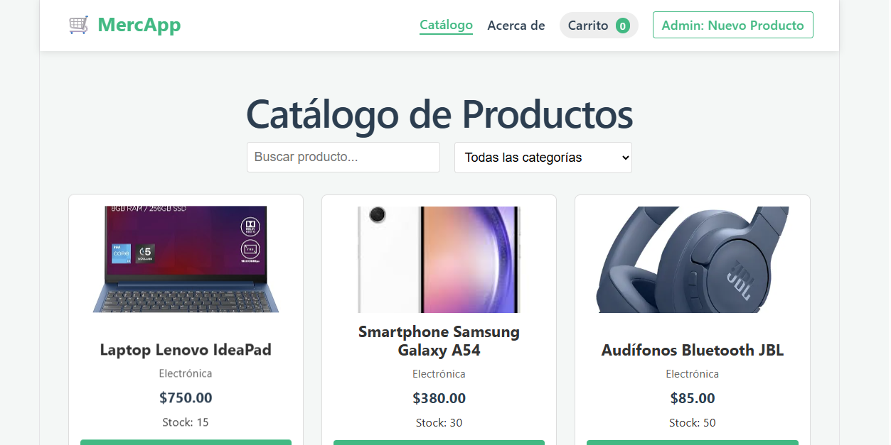
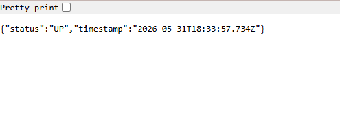
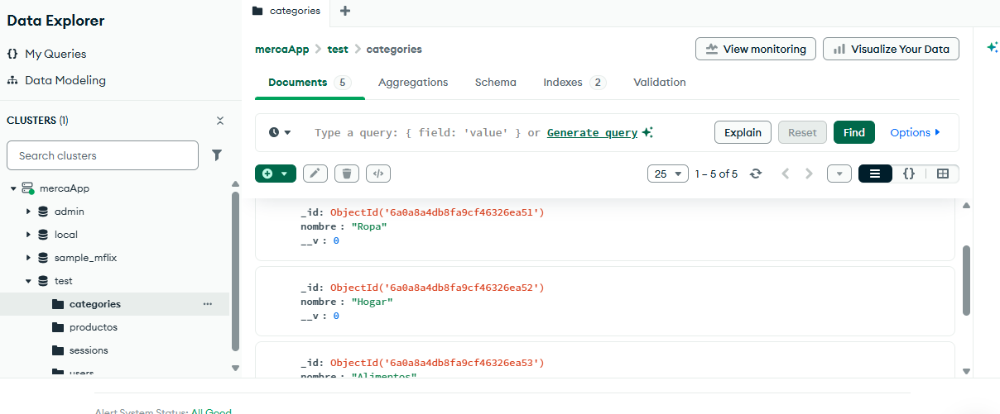

Implementación de Aplicaciones Web - Pages 3.0
Desarrollado por: Javier Marca
El sistema implementa una arquitectura desacoplada donde el Frontend es una Single Page Application (SPA) y el Backend es una API REST Stateless.
_redirects en Netlify para redirigir todas las peticiones a index.html, evitando errores 404 al recargar rutas internas de Vue Router.cors configurado específicamente para el dominio de producción de Netlify, evitando accesos no autorizados.Endpoints disponibles para la gestión de inventario.
| Método | Ruta | Descripción | Respuesta Esperada |
|---|---|---|---|
| GET | /health |
Diagnóstico de salud del sistema | { "status": "up", "db": "connected" } |
| GET | /api/products |
Obtener catálogo completo | [{ "id": "...", "name": "..." }] |
| POST | /api/products |
Registrar nuevo producto | { "id": "...", "message": "Creado" } |
| PUT | /api/products/:id |
Actualizar datos de producto | { "message": "Actualizado" } |
| DELETE | /api/products/:id |
Eliminar registro de producto | { "message": "Eliminado" } |
Para garantizar la estabilidad en producción, se implementó un sistema de logging en el backend:

Se realizaron pruebas de rendimiento utilizando Google Lighthouse en el entorno de producción de Netlify.


Vista general de la SPA en Netlify

Respuesta del endpoint /health en Railway

Colecciones de datos en MongoDB Atlas